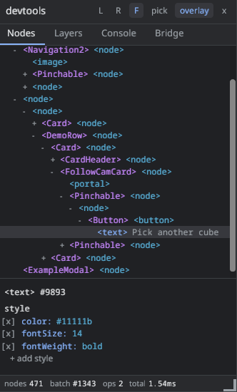
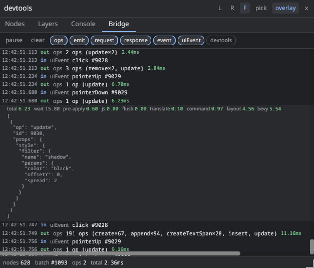

Devtools
The devtools are an inspector for the live UI, drawn with bevy-react itself in an overlay above your app. They show the node tree as React built it, let you edit styles and props in place, list the composited layers, collect console output and warnings, and log every message that crosses the bridge. They run in debug builds only.
Usage
There is nothing to set up. With the devtools cargo feature (on by
default) and a development bundle, ReactUiPlugin adds the inspector:
cargo run # debug build: F12 toggles the panel
cargo run --release # release build: no devtoolsPress F12 to open or close the panel. It reopens where you left it: open or closed, docked or floating, and at the same size.
Configuration
ReactUiPlugin::devtools takes a DevtoolsConfig. Every field has a
default, so override only what you need:
use bevy::prelude::*;
use bevy_react::{prelude::*, DevtoolsConfig};
app.add_plugins(ReactPlugins.set(
ReactUiPlugin::default().devtools(DevtoolsConfig {
toggle_key: KeyCode::F1,
settings_path: Some(".config/devtools.json".into()),
..default()
}),
));| Field | Default | Effect |
|---|---|---|
enabled |
true |
false leaves the inspector out entirely |
toggle_key |
KeyCode::F12 |
The key that opens and closes the panel |
settings_path |
.bevy-react-devtools.json |
Where the panel layout persists; None = off |
The settings file is relative to the working directory and holds only the
panel's layout (dock side, size, toggles, whether it was open). Add it to
your .gitignore. Persistence is native only: in a web build the file is
neither read nor written.
Release builds
The inspector never runs in a release build, even when the feature is
compiled in: the plugin registers nothing without debug_assertions. Its
JavaScript half is left out of production bundles (bevy-react build --prod). Both halves are needed: a debug binary with a production bundle,
or a release binary with a development bundle, shows no panel.
Cargo features can't depend on the build profile, so the inactive Rust code
is still compiled into release binaries. If a shipping build must not
contain it, turn off default features and list the ones you use without
devtools (see Cargo features).
The panel
The header holds the layout and mode controls:
- L, R, F: dock the panel to the left or right window edge, or float it. A docked panel resizes from its inner edge; a floating one moves by its header and resizes from its bottom-right corner.
- push (docked only): reserve the panel's width so the app's UI reflows beside it instead of underneath.
- pick: click a node on screen to select it in the tree. Hovering highlights what you would pick. Escape leaves pick mode.
- overlay: show or hide the outline drawn around the selected node.
- x: close the panel.
The footer shows the app's node count and the last op batch: its number, op count and Rust-side apply time.
The panel blocks pointer input to the app beneath it. Its own nodes and ops are left out of the tree, the counts and the bridge log.
Nodes
The Nodes tab is the node tree and an inspector for the selected node.
- Each row shows the element, with its
nameprop when it has one (see Named nodes). Where a React component starts emitting nodes, the row leads with that component's name, such as<Card>. Text rows show their content. - Chips above the tree switch between the main UI tree and each
<root>, labelled by the root'sname. expand and collapse apply to the whole tree. - Hovering a row outlines its node on screen. Clicking a row selects it.
The inspector lists the selected node's style and props as raw wire
values, exactly what React sent:
- Click a value to edit it. Enter applies, Escape cancels. An invalid value stays in the editor with an error and is never sent.
- The
[x]box next to a style declaration disables it; ticking it again restores the value. - + add style takes a
field: valuedeclaration. - Edits are transient. They go through the same path as a React update, and the next React render that changes the same field overwrites them. Nothing is written back to your source.
Warnings
An invalid value (an unknown color name, a malformed length, a style
property the element ignores, an unknown prop) never stops rendering: it
falls back to a default and reports a warning. Every warning goes to the
terminal log once per distinct message, in every build. With the devtools
running, it also flags the offending row in the inspector with (!) and the
warning text, and appears in the Console tab. An unknown style field is
flagged even before Bevy reports it.
Layers
The Layers tab lists the composited layers (see Layers): a wireframe map of their rectangles over a list with, for each layer:
- the element and node id, and why it was promoted:
opacity,filter,transform3d,backdrop,morphorcache; - how many times it has repainted, how many nodes it holds, its size and its estimated texture memory;
- its
filter,backdropFilterandmorphFilterchains with live param values, including animated ones.
A layer whose node is not currently rendered is marked inactive. Hovering
a row outlines its node on screen. The tab streams data only while it is
shown.
Console
The Console tab collects JavaScript console output, bevy-react's warnings
and JS runtime failures, such as a rejected hot reload. Each entry shows its
time, its source (js or rust) and its level; level chips filter the
list, and clear empties it. It keeps the last 500 entries, collected
from startup whether or not the panel is open. Everything here is also in
the terminal log.
In a web build the Console tab stays empty: console output goes to the
browser's own console.
Bridge
The Bridge tab is a network log of the bridge: op batches sent by React,
emit messages, requests and their responses, Bevy events, and UI events
such as clicks. Each row shows the time, direction (out to Bevy, in to
React), kind and a summary. Clicking a row expands its JSON payload.
Op batches carry their cost. The row shows the total, and the expanded row
breaks it down: your event handler plus React's render and commit (js),
serializing and decoding the batch (flush), translating ops into ECS
commands (translate), running those commands (command) and laying out
the UI (layout). wait, the time a
batch queued until the next frame started, is shown but not counted in the
total. See Performance for what these numbers mean.
pause freezes the log and clear empties it. The kind chips filter
it, and the devtools chip includes the panel's own messages, hidden by
default. The log keeps the last 500 entries and records only while the
panel is open.
Limits
- Pick mode doesn't swallow the click: the picked node's own
onClickand other handlers fire as usual. - Pick mode only sees the window's UI. Nodes inside a
<surface>can't be picked on screen; select them in the tree. - Edits are transient and per node. There is no undo beyond re-enabling a disabled declaration.

